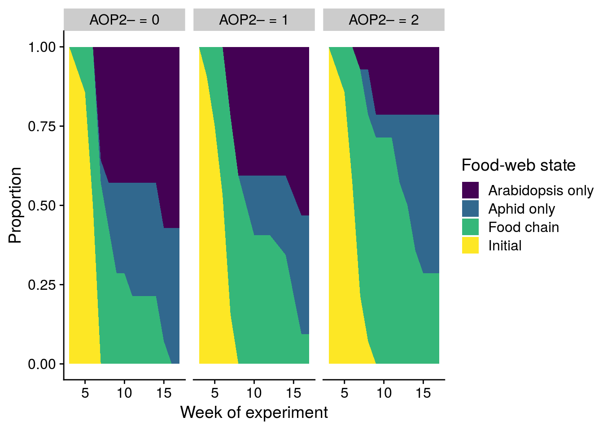
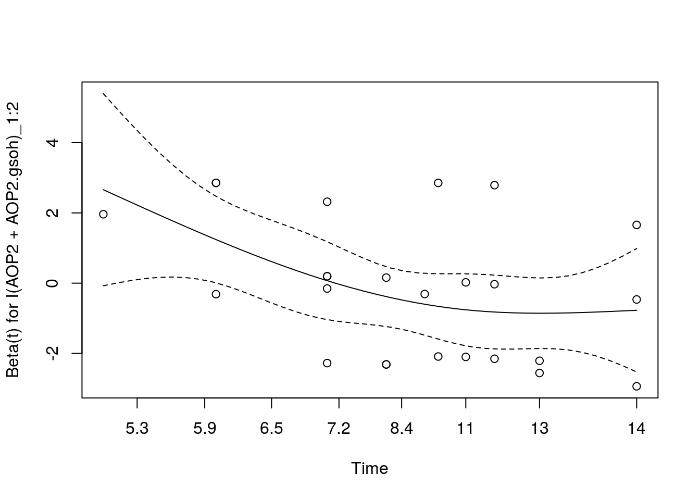

Last updated: 2021-06-24
Checks: 6 1
Knit directory: genes-to-foodweb-stability/
This reproducible R Markdown analysis was created with workflowr (version 1.6.2). The Checks tab describes the reproducibility checks that were applied when the results were created. The Past versions tab lists the development history.
The R Markdown is untracked by Git. To know which version of the R Markdown file created these results, you’ll want to first commit it to the Git repo. If you’re still working on the analysis, you can ignore this warning. When you’re finished, you can run wflow_publish to commit the R Markdown file and build the HTML.
Great job! The global environment was empty. Objects defined in the global environment can affect the analysis in your R Markdown file in unknown ways. For reproduciblity it’s best to always run the code in an empty environment.
The command set.seed(20200205) was run prior to running the code in the R Markdown file. Setting a seed ensures that any results that rely on randomness, e.g. subsampling or permutations, are reproducible.
Great job! Recording the operating system, R version, and package versions is critical for reproducibility.
Nice! There were no cached chunks for this analysis, so you can be confident that you successfully produced the results during this run.
Great job! Using relative paths to the files within your workflowr project makes it easier to run your code on other machines.
Great! You are using Git for version control. Tracking code development and connecting the code version to the results is critical for reproducibility.
The results in this page were generated with repository version 1955523. See the Past versions tab to see a history of the changes made to the R Markdown and HTML files.
Note that you need to be careful to ensure that all relevant files for the analysis have been committed to Git prior to generating the results (you can use wflow_publish or wflow_git_commit). workflowr only checks the R Markdown file, but you know if there are other scripts or data files that it depends on. Below is the status of the Git repository when the results were generated:
Ignored files:
Ignored: .Rhistory
Ignored: .Rproj.user/
Ignored: code/.Rhistory
Ignored: output/.Rapp.history
Untracked files:
Untracked: .genes-to-foodweb-stability.Rproj.swp
Untracked: analysis/foodweb-persistence.Rmd
Untracked: analysis/foodweb-transitions.Rmd
Untracked: analysis/plant-growth-no-insects-lme.Rmd
Untracked: analysis/prep-timeseries.Rmd
Untracked: analysis/structural-stability.Rmd
Untracked: code/summarize_stability_metrics.R
Untracked: data/InsectAbundanceSurvival.csv
Untracked: data/insect_abundance_data_2018-09-26_underneathleaf.csv
Untracked: figures/MAR1-parameter-plot.pdf
Untracked: figures/aop2-genos-coxadjcurve.pdf
Untracked: figures/aop2-genotypes-multistate.pdf
Untracked: figures/cage-dynamics-20C.pdf
Untracked: figures/cage-dynamics-23C.pdf
Untracked: figures/keystone-coxadjcurve.pdf
Untracked: figures/keystone-effect-model-comparison-ratio.pdf
Untracked: output/all.mar1.brm.adj.rds
Untracked: output/all.mar1.brm.unadj.ar2.lag.rds
Untracked: output/all.mar1.brm.unadj.noBRBRonLYER.rds
Untracked: output/all.mar1.brm.unadj.rds
Untracked: output/all.mar1.brm.unadj.xAOP2.rds
Untracked: output/initial.mar1.brm.adj.rds
Untracked: output/initial.mar1.brm.unadj.rds
Untracked: output/time-series-data.RData
Unstaged changes:
Modified: README.md
Deleted: analysis/about.Rmd
Deleted: analysis/community-persistence-keystone.Rmd
Deleted: analysis/critical-transitions-keystone.Rmd
Modified: analysis/index.Rmd
Deleted: analysis/plant-growth-no-insects.Rmd
Deleted: analysis/structural-stability-keystone.Rmd
Deleted: code/AOP2-LYER-Ptoid-persistence.R
Modified: code/README.md
Deleted: code/glm-ftest.R
Modified: code/plot-feasibility-domain.R
Deleted: code/prep-time-series.R
Modified: code/simulate-community-dynamics.R
Deleted: code/temperature-structural-stability-fig.R
Modified: data/README.md
Deleted: data/arabidopsis_clean_df.csv
Modified: figures/AOP2-growth-no-insects.pdf
Modified: figures/MAR1-nonequilibrium-foodchain-AOP2.pdf
Deleted: figures/MAR1-nonequilibrium-initial-temp.pdf
Modified: figures/MAR1-posterior-foodchain-AOP2.pdf
Deleted: figures/MAR1-posterior-initial-temp.pdf
Deleted: figures/initial-foodweb-structural-stability.png
Modified: figures/keystone-gene.pdf
Modified: figures/keystone-structural-stability-forkeynote.pdf
Modified: output/README.md
Deleted: output/full.mv.norm.brm.keystone.rds
Deleted: output/plant-growth-no-insects.RData
Deleted: output/reduced.1.brm.keystone.rds
Deleted: output/reduced.2.brm.keystone.rds
Deleted: output/reduced.3.brm.keystone.rds
Deleted: output/reduced.4.brm.keystone.rds
Deleted: output/reduced.5.brm.keystone.rds
Deleted: output/reduced.6.brm.keystone.rds
Deleted: output/timeseries_df.csv
Note that any generated files, e.g. HTML, png, CSS, etc., are not included in this status report because it is ok for generated content to have uncommitted changes.
There are no past versions. Publish this analysis with wflow_publish() to start tracking its development.
# Load and manage data
df <- read_csv("data/InsectAbundanceSurvival.csv") %>%
# renaming for brevity
rename(cage = Cage,
com = Composition,
week = Week,
temp = Temperature,
rich = Richness) %>%
mutate(cage = as.character(cage),
fweek = factor(ifelse(week < 10, paste("0", week, sep=""), week)),
temp = ifelse(temp=="20 C", 0, 1)) %>%
arrange(cage, week)
# create data for multi-state survival analysis
state_df <- df %>%
# counter information is not relevant (because it is the same), so we summarise across it
group_by(cage, fweek, week, temp, rich, Col, gsm1, AOP2, AOP2.gsoh, com) %>%
summarise_at(vars(BRBR_Survival, LYER_Survival, Mummy_Ptoids_Survival), list(mean)) %>%
ungroup() %>%
# create possible food-web states
mutate(BRBR = ifelse(BRBR_Survival == 1, "BRBR", ifelse(BRBR_Survival == 0, "0", NA)),
LYER = ifelse(LYER_Survival == 1, "LYER", ifelse(LYER_Survival == 0, "0", NA)),
Ptoid = ifelse(Mummy_Ptoids_Survival == 1, "Ptoid", ifelse(Mummy_Ptoids_Survival == 0, "0", NA))) %>%
mutate(state = paste(BRBR, LYER, Ptoid, sep = "-"),
cage = as.character(cage)) %>%
# these variables are no longer needed
select(-BRBR, -LYER, -Ptoid) %>%
# remove all instances where all species have been labelled extinct for more than 1 week "NA-NA-NA".
# also, only keep observations after 2 weeks when we added the parasitoid (full community)
filter(state != "NA-NA-NA", week > 2) %>%
mutate(week_since = week - 2)
# replace NA with zeros for state variable
state_df$state <- gsub("NA","0", state_df$state)
# everything appears in order
arrange(state_df, cage, week_since) %>% select(cage, week_since, BRBR_Survival, LYER_Survival, Mummy_Ptoids_Survival, state) # A tibble: 710 x 6
cage week_since BRBR_Survival LYER_Survival Mummy_Ptoids_Surviv… state
<chr> <dbl> <dbl> <dbl> <dbl> <chr>
1 1 1 1 1 1 BRBR-LYER-…
2 1 2 1 1 1 BRBR-LYER-…
3 1 3 1 1 1 BRBR-LYER-…
4 1 4 1 1 1 BRBR-LYER-…
5 1 5 0 0 1 0-0-Ptoid
6 1 6 NA NA 0 0-0-0
7 10 1 1 1 1 BRBR-LYER-…
8 10 2 1 1 1 BRBR-LYER-…
9 10 3 1 1 1 BRBR-LYER-…
10 10 4 1 1 1 BRBR-LYER-…
# … with 700 more rowsmsm# state transitions for all cages and time points
msm::statetable.msm(state = state, subject = cage, data = state_df) to
from 0-0-0 0-0-Ptoid 0-LYER-0 0-LYER-Ptoid BRBR-LYER-Ptoid
0-0-Ptoid 22 7 0 0 0
0-LYER-0 1 0 131 0 0
0-LYER-Ptoid 5 12 26 242 0
BRBR-LYER-Ptoid 0 10 0 50 144# turn state into numeric values, which is necessary for the analysis
state_df$state_type <- with(state_df, ifelse(state == "BRBR-LYER-Ptoid", 1,
ifelse(state == "0-LYER-Ptoid", 2,
ifelse(state == "0-LYER-0", 3,
ifelse(state == "0-0-Ptoid", 4,
ifelse(state == "0-0-0", 5, NA))))))
# no NAs
which(is.na(state_df$state_type) == T)integer(0)# inspect states
statetable.msm(state = state_type, subject = cage, data = state_df) to
from 1 2 3 4 5
1 144 50 0 10 0
2 0 242 26 12 5
3 0 0 131 0 1
4 0 0 0 7 22# specify allowed transitions
Q <- rbind(c(0,1,0,1,0),
c(0,0,1,1,0),
c(0,0,0,0,1),
c(0,0,0,0,1),
c(0,0,0,0,0))
# give informative labels
rownames(Q) <- colnames(Q) <- c("1-1-1","0-1-1","0-1-0","0-0-1","0-0-0")
# everything appears in order
Q 1-1-1 0-1-1 0-1-0 0-0-1 0-0-0
1-1-1 0 1 0 1 0
0-1-1 0 0 1 1 0
0-1-0 0 0 0 0 1
0-0-1 0 0 0 0 1
0-0-0 0 0 0 0 0# we use this initial transition matrix by specifying "gen.inits = T" in msm model
crudeinits.msm(state_type ~ week_since, subject = cage, data = state_df, qmatrix = Q) 1-1-1 0-1-1 0-1-0 0-0-1 0-0-0
1-1-1 -0.2941176 0.2450980 0.000000000 0.04901961 0.000000000
0-1-1 0.0000000 -0.1333333 0.091228070 0.04210526 0.000000000
0-1-0 0.0000000 0.0000000 -0.007575758 0.00000000 0.007575758
0-0-1 0.0000000 0.0000000 0.000000000 -0.75862069 0.758620690
0-0-0 0.0000000 0.0000000 0.000000000 0.00000000 0.000000000# fit model
AOP2_foodweb.msm <- msm(state_type ~ week_since,
subject = cage,
data = state_df,
qmatrix = Q,
gen.inits = TRUE,
# for "3-5" (aphid alone to collapse) and "4-5" (ptoid alone to collapse),
# I don't expect there to be any genetic effects, because the aphid alone
# will likely persist regardless of plant genetics. similarly, a parasitoid
# population without any aphids will inevitably go extinct.
covariates = list("1-2" =~ I(Col+gsm1) + I(AOP2+AOP2.gsoh),
"1-4" =~ I(Col+gsm1) + I(AOP2+AOP2.gsoh),
"2-3" =~ I(Col+gsm1) + I(AOP2+AOP2.gsoh),
"2-4" =~ I(Col+gsm1) + I(AOP2+AOP2.gsoh)),
obstype = 1)
# hazard ratios for each food-web transition
hazard.msm(AOP2_foodweb.msm)$`I(Col + gsm1)`
HR L U
1-1-1 - 0-1-1 0.9442035 0.6251704 1.4260437
1-1-1 - 0-0-1 0.9222300 0.2975583 2.8582907
0-1-1 - 0-1-0 0.8370570 0.4655484 1.5050303
0-1-1 - 0-0-1 0.3292210 0.1483872 0.7304303
0-1-0 - 0-0-0 1.0000000 1.0000000 1.0000000
0-0-1 - 0-0-0 1.0000000 1.0000000 1.0000000
$`I(AOP2 + AOP2.gsoh)`
HR L U
1-1-1 - 0-1-1 0.9732554 0.6506339 1.455851
1-1-1 - 0-0-1 1.2270368 0.3875724 3.884743
0-1-1 - 0-1-0 0.8579613 0.4747299 1.550561
0-1-1 - 0-0-1 0.7437616 0.2954229 1.872506
0-1-0 - 0-0-0 1.0000000 1.0000000 1.000000
0-0-1 - 0-0-0 1.0000000 1.0000000 1.000000# for coxph analysis (multistate), this may not be completely necessary
AJ_state_df <- state_df %>%
# convert Ptoid only state to collapsed state, which is inevitable
mutate(state_adj = ifelse(state == "0-0-Ptoid", "0-0-0", state)) %>%
# convert state into a factor for analysis
mutate(fstate = factor(state_adj, levels = c("BRBR-LYER-Ptoid","0-LYER-Ptoid","0-LYER-0","0-0-0"))) %>%
mutate(rich_temp = paste(rich, temp, sep = "_")) %>%
mutate(aop2_genotypes = factor(Col+gsm1, levels = c(0,1,2), labels = c("AOP2\u2013 = 0", "AOP2\u2013 = 1", "AOP2\u2013 = 2")))
# get food-web transitions as a function of number of aop2 genotypes
aop2_AJ <- survfit(Surv(I(week_since-1), week_since, fstate) ~ aop2_genotypes, data = AJ_state_df, id = cage)
tidy_aop2_AJ <- tidy(aop2_AJ)
tidy_aop2_AJ$strata <- sub(pattern = "aop2_genotypes=", replacement = "", x = tidy_aop2_AJ$strata)
# plot
plot_aop2_genotypes_multistate <- ggplot(tidy_aop2_AJ, aes(x = time + 2, y = estimate)) +
geom_area(aes(fill = state)) +
facet_wrap(~strata) +
scale_fill_viridis_d(name = "Food-web state", labels = c("Arabidopsis only","Aphid only","Food chain","Initial")) +
xlab("Week of experiment") +
ylab("Proportion")
x11(); plot_aop2_genotypes_multistate
#ggsave(plot = plot_aop2_genotypes_multistate, filename = "figures/aop2-genotypes-multistate.pdf", width = 6, height = 5, device=cairo_pdf)
## Organize data for analysis
# LYER-Ptoid cages at least at one time point
LP_cages <- unique(filter(state_df, state == "0-LYER-Ptoid")$cage)
# should be 50 cages, and it is
length(LP_cages)[1] 50# filter and manage data
LP_transit_df <- state_df %>%
filter(cage %in% LP_cages, state != "BRBR-LYER-Ptoid") %>%
# omit BRBR from consideration
select(-BRBR_Survival) %>%
# omit rows where we already know either LYER or Ptoid went extinct
na.omit() %>%
mutate(# assume these two states are the same, i.e. to get to 0-0-0, had to go through 0-0-Ptoid
state_adj = ifelse(state %in% c("0-0-Ptoid","0-0-0"), "0-0-Ptoid", state))
# confirm levels
unique(LP_transit_df$state_adj) #fstate)[1] "0-LYER-Ptoid" "0-LYER-0" "0-0-Ptoid" # get start times after BRBR went extinct
get_LP_transit_start <- LP_transit_df %>%
group_by(cage) %>%
arrange(week_since) %>%
mutate(start = first(week_since))
# all looks in order
get_LP_transit_start %>% arrange(cage) %>% data.frame() cage fweek week temp rich Col gsm1 AOP2 AOP2.gsoh com
1 12 07 7 0 4 1 1 1 1 Poly
2 12 08 8 0 4 1 1 1 1 Poly
3 12 09 9 0 4 1 1 1 1 Poly
4 12 10 10 0 4 1 1 1 1 Poly
5 12 11 11 0 4 1 1 1 1 Poly
6 12 12 12 0 4 1 1 1 1 Poly
7 12 13 13 0 4 1 1 1 1 Poly
8 12 14 14 0 4 1 1 1 1 Poly
9 12 15 15 0 4 1 1 1 1 Poly
10 12 16 16 0 4 1 1 1 1 Poly
11 12 17 17 0 4 1 1 1 1 Poly
12 13 06 6 0 4 1 1 1 1 Poly
13 13 07 7 0 4 1 1 1 1 Poly
14 13 08 8 0 4 1 1 1 1 Poly
15 13 09 9 0 4 1 1 1 1 Poly
16 13 10 10 0 4 1 1 1 1 Poly
17 13 11 11 0 4 1 1 1 1 Poly
18 13 12 12 0 4 1 1 1 1 Poly
19 13 13 13 0 4 1 1 1 1 Poly
20 13 14 14 0 4 1 1 1 1 Poly
21 13 15 15 0 4 1 1 1 1 Poly
22 13 16 16 0 4 1 1 1 1 Poly
23 13 17 17 0 4 1 1 1 1 Poly
24 14 08 8 0 1 1 0 0 0 Col
25 14 09 9 0 1 1 0 0 0 Col
26 14 10 10 0 1 1 0 0 0 Col
27 15 07 7 0 1 0 0 0 1 AOP2.gsoh
28 15 08 8 0 1 0 0 0 1 AOP2.gsoh
29 15 09 9 0 1 0 0 0 1 AOP2.gsoh
30 15 10 10 0 1 0 0 0 1 AOP2.gsoh
31 15 11 11 0 1 0 0 0 1 AOP2.gsoh
32 15 12 12 0 1 0 0 0 1 AOP2.gsoh
33 15 13 13 0 1 0 0 0 1 AOP2.gsoh
34 15 14 14 0 1 0 0 0 1 AOP2.gsoh
35 15 15 15 0 1 0 0 0 1 AOP2.gsoh
36 17 08 8 0 2 0 1 1 0 gsm1_AOP2
37 17 09 9 0 2 0 1 1 0 gsm1_AOP2
38 18 07 7 0 2 1 0 0 1 Col_AOP2.gsoh
39 18 08 8 0 2 1 0 0 1 Col_AOP2.gsoh
40 18 09 9 0 2 1 0 0 1 Col_AOP2.gsoh
41 18 10 10 0 2 1 0 0 1 Col_AOP2.gsoh
42 18 11 11 0 2 1 0 0 1 Col_AOP2.gsoh
43 18 12 12 0 2 1 0 0 1 Col_AOP2.gsoh
44 18 13 13 0 2 1 0 0 1 Col_AOP2.gsoh
45 18 14 14 0 2 1 0 0 1 Col_AOP2.gsoh
46 18 15 15 0 2 1 0 0 1 Col_AOP2.gsoh
47 18 16 16 0 2 1 0 0 1 Col_AOP2.gsoh
48 20 07 7 0 2 0 1 1 0 gsm1_AOP2
49 20 08 8 0 2 0 1 1 0 gsm1_AOP2
50 20 09 9 0 2 0 1 1 0 gsm1_AOP2
51 20 10 10 0 2 0 1 1 0 gsm1_AOP2
52 20 11 11 0 2 0 1 1 0 gsm1_AOP2
53 20 12 12 0 2 0 1 1 0 gsm1_AOP2
54 20 13 13 0 2 0 1 1 0 gsm1_AOP2
55 22 07 7 0 1 0 0 0 1 AOP2.gsoh
56 22 08 8 0 1 0 0 0 1 AOP2.gsoh
57 23 07 7 0 2 0 0 1 1 AOP2_AOP2.gsoh
58 23 08 8 0 2 0 0 1 1 AOP2_AOP2.gsoh
59 23 09 9 0 2 0 0 1 1 AOP2_AOP2.gsoh
60 23 10 10 0 2 0 0 1 1 AOP2_AOP2.gsoh
61 23 11 11 0 2 0 0 1 1 AOP2_AOP2.gsoh
62 23 12 12 0 2 0 0 1 1 AOP2_AOP2.gsoh
63 23 13 13 0 2 0 0 1 1 AOP2_AOP2.gsoh
64 23 14 14 0 2 0 0 1 1 AOP2_AOP2.gsoh
65 23 15 15 0 2 0 0 1 1 AOP2_AOP2.gsoh
66 23 16 16 0 2 0 0 1 1 AOP2_AOP2.gsoh
67 25 06 6 0 1 0 0 1 0 AOP2
68 25 07 7 0 1 0 0 1 0 AOP2
69 25 08 8 0 1 0 0 1 0 AOP2
70 26 07 7 0 1 1 0 0 0 Col
71 26 08 8 0 1 1 0 0 0 Col
72 27 07 7 0 2 1 0 1 0 Col_AOP2
73 27 08 8 0 2 1 0 1 0 Col_AOP2
74 28 06 6 0 2 1 0 0 1 Col_AOP2.gsoh
75 28 07 7 0 2 1 0 0 1 Col_AOP2.gsoh
76 28 08 8 0 2 1 0 0 1 Col_AOP2.gsoh
77 29 06 6 0 2 0 1 0 1 gsm1_AOP2.gsoh
78 29 07 7 0 2 0 1 0 1 gsm1_AOP2.gsoh
79 29 08 8 0 2 0 1 0 1 gsm1_AOP2.gsoh
80 29 09 9 0 2 0 1 0 1 gsm1_AOP2.gsoh
81 29 10 10 0 2 0 1 0 1 gsm1_AOP2.gsoh
82 29 11 11 0 2 0 1 0 1 gsm1_AOP2.gsoh
83 29 12 12 0 2 0 1 0 1 gsm1_AOP2.gsoh
84 29 13 13 0 2 0 1 0 1 gsm1_AOP2.gsoh
85 29 14 14 0 2 0 1 0 1 gsm1_AOP2.gsoh
86 29 15 15 0 2 0 1 0 1 gsm1_AOP2.gsoh
87 30 08 8 0 2 1 1 0 0 Col_gsm1
88 30 09 9 0 2 1 1 0 0 Col_gsm1
89 30 10 10 0 2 1 1 0 0 Col_gsm1
90 30 11 11 0 2 1 1 0 0 Col_gsm1
91 30 12 12 0 2 1 1 0 0 Col_gsm1
92 30 13 13 0 2 1 1 0 0 Col_gsm1
93 30 14 14 0 2 1 1 0 0 Col_gsm1
94 31 07 7 1 2 0 1 1 0 gsm1_AOP2
95 31 08 8 1 2 0 1 1 0 gsm1_AOP2
96 31 09 9 1 2 0 1 1 0 gsm1_AOP2
97 31 10 10 1 2 0 1 1 0 gsm1_AOP2
98 31 11 11 1 2 0 1 1 0 gsm1_AOP2
99 31 12 12 1 2 0 1 1 0 gsm1_AOP2
100 31 13 13 1 2 0 1 1 0 gsm1_AOP2
101 31 14 14 1 2 0 1 1 0 gsm1_AOP2
102 32 05 5 1 1 1 0 0 0 Col
103 32 06 6 1 1 1 0 0 0 Col
104 32 07 7 1 1 1 0 0 0 Col
105 32 08 8 1 1 1 0 0 0 Col
106 32 09 9 1 1 1 0 0 0 Col
107 32 10 10 1 1 1 0 0 0 Col
108 32 11 11 1 1 1 0 0 0 Col
109 32 12 12 1 1 1 0 0 0 Col
110 32 13 13 1 1 1 0 0 0 Col
111 32 14 14 1 1 1 0 0 0 Col
112 32 15 15 1 1 1 0 0 0 Col
113 33 05 5 1 1 1 0 0 0 Col
114 33 06 6 1 1 1 0 0 0 Col
115 33 07 7 1 1 1 0 0 0 Col
116 33 08 8 1 1 1 0 0 0 Col
117 33 09 9 1 1 1 0 0 0 Col
118 33 10 10 1 1 1 0 0 0 Col
119 34 06 6 1 2 1 0 0 1 Col_AOP2.gsoh
120 34 07 7 1 2 1 0 0 1 Col_AOP2.gsoh
121 34 08 8 1 2 1 0 0 1 Col_AOP2.gsoh
122 34 09 9 1 2 1 0 0 1 Col_AOP2.gsoh
123 35 06 6 1 2 0 0 1 1 AOP2_AOP2.gsoh
124 35 07 7 1 2 0 0 1 1 AOP2_AOP2.gsoh
125 36 04 4 1 2 0 1 0 1 gsm1_AOP2.gsoh
126 36 05 5 1 2 0 1 0 1 gsm1_AOP2.gsoh
127 36 06 6 1 2 0 1 0 1 gsm1_AOP2.gsoh
128 36 07 7 1 2 0 1 0 1 gsm1_AOP2.gsoh
129 36 08 8 1 2 0 1 0 1 gsm1_AOP2.gsoh
130 36 09 9 1 2 0 1 0 1 gsm1_AOP2.gsoh
131 36 10 10 1 2 0 1 0 1 gsm1_AOP2.gsoh
132 36 11 11 1 2 0 1 0 1 gsm1_AOP2.gsoh
133 36 12 12 1 2 0 1 0 1 gsm1_AOP2.gsoh
134 36 13 13 1 2 0 1 0 1 gsm1_AOP2.gsoh
135 36 14 14 1 2 0 1 0 1 gsm1_AOP2.gsoh
136 36 15 15 1 2 0 1 0 1 gsm1_AOP2.gsoh
137 37 06 6 1 2 0 1 0 1 gsm1_AOP2.gsoh
138 37 07 7 1 2 0 1 0 1 gsm1_AOP2.gsoh
139 37 08 8 1 2 0 1 0 1 gsm1_AOP2.gsoh
140 37 09 9 1 2 0 1 0 1 gsm1_AOP2.gsoh
141 37 10 10 1 2 0 1 0 1 gsm1_AOP2.gsoh
142 37 11 11 1 2 0 1 0 1 gsm1_AOP2.gsoh
143 37 12 12 1 2 0 1 0 1 gsm1_AOP2.gsoh
144 37 13 13 1 2 0 1 0 1 gsm1_AOP2.gsoh
145 37 14 14 1 2 0 1 0 1 gsm1_AOP2.gsoh
146 37 15 15 1 2 0 1 0 1 gsm1_AOP2.gsoh
147 37 16 16 1 2 0 1 0 1 gsm1_AOP2.gsoh
148 37 17 17 1 2 0 1 0 1 gsm1_AOP2.gsoh
149 38 04 4 1 4 1 1 1 1 Poly
150 38 05 5 1 4 1 1 1 1 Poly
151 38 06 6 1 4 1 1 1 1 Poly
152 38 07 7 1 4 1 1 1 1 Poly
153 38 08 8 1 4 1 1 1 1 Poly
154 38 09 9 1 4 1 1 1 1 Poly
155 38 10 10 1 4 1 1 1 1 Poly
156 38 11 11 1 4 1 1 1 1 Poly
157 38 12 12 1 4 1 1 1 1 Poly
158 38 13 13 1 4 1 1 1 1 Poly
159 38 14 14 1 4 1 1 1 1 Poly
160 39 07 7 1 1 0 1 0 0 gsm1
161 39 08 8 1 1 0 1 0 0 gsm1
162 39 09 9 1 1 0 1 0 0 gsm1
163 4 07 7 0 1 0 0 1 0 AOP2
164 4 08 8 0 1 0 0 1 0 AOP2
165 4 09 9 0 1 0 0 1 0 AOP2
166 40 04 4 1 2 0 1 0 1 gsm1_AOP2.gsoh
167 40 05 5 1 2 0 1 0 1 gsm1_AOP2.gsoh
168 40 06 6 1 2 0 1 0 1 gsm1_AOP2.gsoh
169 40 07 7 1 2 0 1 0 1 gsm1_AOP2.gsoh
170 40 08 8 1 2 0 1 0 1 gsm1_AOP2.gsoh
171 40 09 9 1 2 0 1 0 1 gsm1_AOP2.gsoh
172 40 10 10 1 2 0 1 0 1 gsm1_AOP2.gsoh
173 40 11 11 1 2 0 1 0 1 gsm1_AOP2.gsoh
174 40 12 12 1 2 0 1 0 1 gsm1_AOP2.gsoh
175 40 13 13 1 2 0 1 0 1 gsm1_AOP2.gsoh
176 40 14 14 1 2 0 1 0 1 gsm1_AOP2.gsoh
177 40 15 15 1 2 0 1 0 1 gsm1_AOP2.gsoh
178 40 16 16 1 2 0 1 0 1 gsm1_AOP2.gsoh
179 41 08 8 1 2 1 0 1 0 Col_AOP2
180 41 09 9 1 2 1 0 1 0 Col_AOP2
181 41 10 10 1 2 1 0 1 0 Col_AOP2
182 42 06 6 1 2 1 0 1 0 Col_AOP2
183 42 07 7 1 2 1 0 1 0 Col_AOP2
184 43 06 6 1 4 1 1 1 1 Poly
185 43 07 7 1 4 1 1 1 1 Poly
186 43 08 8 1 4 1 1 1 1 Poly
187 43 09 9 1 4 1 1 1 1 Poly
188 43 10 10 1 4 1 1 1 1 Poly
189 43 11 11 1 4 1 1 1 1 Poly
190 43 12 12 1 4 1 1 1 1 Poly
191 45 06 6 1 2 1 1 0 0 Col_gsm1
192 45 07 7 1 2 1 1 0 0 Col_gsm1
193 45 08 8 1 2 1 1 0 0 Col_gsm1
194 45 09 9 1 2 1 1 0 0 Col_gsm1
195 45 10 10 1 2 1 1 0 0 Col_gsm1
196 45 11 11 1 2 1 1 0 0 Col_gsm1
197 45 12 12 1 2 1 1 0 0 Col_gsm1
198 45 13 13 1 2 1 1 0 0 Col_gsm1
199 45 14 14 1 2 1 1 0 0 Col_gsm1
200 45 15 15 1 2 1 1 0 0 Col_gsm1
201 45 16 16 1 2 1 1 0 0 Col_gsm1
202 45 17 17 1 2 1 1 0 0 Col_gsm1
203 46 06 6 1 4 1 1 1 1 Poly
204 46 07 7 1 4 1 1 1 1 Poly
205 46 08 8 1 4 1 1 1 1 Poly
206 47 04 4 1 2 0 1 1 0 gsm1_AOP2
207 47 05 5 1 2 0 1 1 0 gsm1_AOP2
208 47 06 6 1 2 0 1 1 0 gsm1_AOP2
209 47 07 7 1 2 0 1 1 0 gsm1_AOP2
210 47 08 8 1 2 0 1 1 0 gsm1_AOP2
211 47 09 9 1 2 0 1 1 0 gsm1_AOP2
212 47 10 10 1 2 0 1 1 0 gsm1_AOP2
213 47 11 11 1 2 0 1 1 0 gsm1_AOP2
214 47 12 12 1 2 0 1 1 0 gsm1_AOP2
215 47 13 13 1 2 0 1 1 0 gsm1_AOP2
216 47 14 14 1 2 0 1 1 0 gsm1_AOP2
217 47 15 15 1 2 0 1 1 0 gsm1_AOP2
218 48 06 6 1 2 0 0 1 1 AOP2_AOP2.gsoh
219 48 07 7 1 2 0 0 1 1 AOP2_AOP2.gsoh
220 48 08 8 1 2 0 0 1 1 AOP2_AOP2.gsoh
221 48 09 9 1 2 0 0 1 1 AOP2_AOP2.gsoh
222 49 07 7 1 2 1 1 0 0 Col_gsm1
223 49 08 8 1 2 1 1 0 0 Col_gsm1
224 49 09 9 1 2 1 1 0 0 Col_gsm1
225 49 10 10 1 2 1 1 0 0 Col_gsm1
226 49 11 11 1 2 1 1 0 0 Col_gsm1
227 49 12 12 1 2 1 1 0 0 Col_gsm1
228 49 13 13 1 2 1 1 0 0 Col_gsm1
229 5 08 8 0 1 0 1 0 0 gsm1
230 5 09 9 0 1 0 1 0 0 gsm1
231 5 10 10 0 1 0 1 0 0 gsm1
232 5 11 11 0 1 0 1 0 0 gsm1
233 5 12 12 0 1 0 1 0 0 gsm1
234 5 13 13 0 1 0 1 0 0 gsm1
235 5 14 14 0 1 0 1 0 0 gsm1
236 5 15 15 0 1 0 1 0 0 gsm1
237 5 16 16 0 1 0 1 0 0 gsm1
238 50 06 6 1 2 1 0 1 0 Col_AOP2
239 50 07 7 1 2 1 0 1 0 Col_AOP2
240 50 08 8 1 2 1 0 1 0 Col_AOP2
241 50 09 9 1 2 1 0 1 0 Col_AOP2
242 50 10 10 1 2 1 0 1 0 Col_AOP2
243 50 11 11 1 2 1 0 1 0 Col_AOP2
244 50 12 12 1 2 1 0 1 0 Col_AOP2
245 50 13 13 1 2 1 0 1 0 Col_AOP2
246 50 14 14 1 2 1 0 1 0 Col_AOP2
247 50 15 15 1 2 1 0 1 0 Col_AOP2
248 50 16 16 1 2 1 0 1 0 Col_AOP2
249 50 17 17 1 2 1 0 1 0 Col_AOP2
250 51 05 5 1 1 0 1 0 0 gsm1
251 51 06 6 1 1 0 1 0 0 gsm1
252 51 07 7 1 1 0 1 0 0 gsm1
253 52 05 5 1 1 0 0 1 0 AOP2
254 52 06 6 1 1 0 0 1 0 AOP2
255 52 07 7 1 1 0 0 1 0 AOP2
256 52 08 8 1 1 0 0 1 0 AOP2
257 52 09 9 1 1 0 0 1 0 AOP2
258 52 10 10 1 1 0 0 1 0 AOP2
259 52 11 11 1 1 0 0 1 0 AOP2
260 53 08 8 1 4 1 1 1 1 Poly
261 53 09 9 1 4 1 1 1 1 Poly
262 53 10 10 1 4 1 1 1 1 Poly
263 53 11 11 1 4 1 1 1 1 Poly
264 53 12 12 1 4 1 1 1 1 Poly
265 53 13 13 1 4 1 1 1 1 Poly
266 53 14 14 1 4 1 1 1 1 Poly
267 53 15 15 1 4 1 1 1 1 Poly
268 53 16 16 1 4 1 1 1 1 Poly
269 53 17 17 1 4 1 1 1 1 Poly
270 54 04 4 1 1 0 0 0 1 AOP2.gsoh
271 54 05 5 1 1 0 0 0 1 AOP2.gsoh
272 54 06 6 1 1 0 0 0 1 AOP2.gsoh
273 54 07 7 1 1 0 0 0 1 AOP2.gsoh
274 54 08 8 1 1 0 0 0 1 AOP2.gsoh
275 54 09 9 1 1 0 0 0 1 AOP2.gsoh
276 54 10 10 1 1 0 0 0 1 AOP2.gsoh
277 54 11 11 1 1 0 0 0 1 AOP2.gsoh
278 54 12 12 1 1 0 0 0 1 AOP2.gsoh
279 54 13 13 1 1 0 0 0 1 AOP2.gsoh
280 54 14 14 1 1 0 0 0 1 AOP2.gsoh
281 54 15 15 1 1 0 0 0 1 AOP2.gsoh
282 55 07 7 1 2 1 0 0 1 Col_AOP2.gsoh
283 55 08 8 1 2 1 0 0 1 Col_AOP2.gsoh
284 56 06 6 1 1 0 0 0 1 AOP2.gsoh
285 56 07 7 1 1 0 0 0 1 AOP2.gsoh
286 57 06 6 1 2 0 0 1 1 AOP2_AOP2.gsoh
287 57 07 7 1 2 0 0 1 1 AOP2_AOP2.gsoh
288 58 05 5 1 2 1 0 0 1 Col_AOP2.gsoh
289 58 06 6 1 2 1 0 0 1 Col_AOP2.gsoh
290 58 07 7 1 2 1 0 0 1 Col_AOP2.gsoh
291 58 08 8 1 2 1 0 0 1 Col_AOP2.gsoh
292 58 09 9 1 2 1 0 0 1 Col_AOP2.gsoh
293 58 10 10 1 2 1 0 0 1 Col_AOP2.gsoh
294 58 11 11 1 2 1 0 0 1 Col_AOP2.gsoh
295 58 12 12 1 2 1 0 0 1 Col_AOP2.gsoh
296 58 13 13 1 2 1 0 0 1 Col_AOP2.gsoh
297 58 14 14 1 2 1 0 0 1 Col_AOP2.gsoh
298 58 15 15 1 2 1 0 0 1 Col_AOP2.gsoh
299 58 16 16 1 2 1 0 0 1 Col_AOP2.gsoh
300 58 17 17 1 2 1 0 0 1 Col_AOP2.gsoh
301 59 05 5 1 2 1 1 0 0 Col_gsm1
302 59 06 6 1 2 1 1 0 0 Col_gsm1
303 59 07 7 1 2 1 1 0 0 Col_gsm1
304 59 08 8 1 2 1 1 0 0 Col_gsm1
305 59 09 9 1 2 1 1 0 0 Col_gsm1
306 59 10 10 1 2 1 1 0 0 Col_gsm1
307 59 11 11 1 2 1 1 0 0 Col_gsm1
308 59 12 12 1 2 1 1 0 0 Col_gsm1
309 6 07 7 0 2 1 0 1 0 Col_AOP2
310 6 08 8 0 2 1 0 1 0 Col_AOP2
311 6 09 9 0 2 1 0 1 0 Col_AOP2
312 6 10 10 0 2 1 0 1 0 Col_AOP2
313 6 11 11 0 2 1 0 1 0 Col_AOP2
314 6 12 12 0 2 1 0 1 0 Col_AOP2
315 6 13 13 0 2 1 0 1 0 Col_AOP2
316 6 14 14 0 2 1 0 1 0 Col_AOP2
317 6 15 15 0 2 1 0 1 0 Col_AOP2
318 6 16 16 0 2 1 0 1 0 Col_AOP2
319 60 05 5 1 2 0 1 1 0 gsm1_AOP2
320 60 06 6 1 2 0 1 1 0 gsm1_AOP2
321 60 07 7 1 2 0 1 1 0 gsm1_AOP2
322 7 07 7 0 4 1 1 1 1 Poly
323 7 08 8 0 4 1 1 1 1 Poly
324 8 06 6 0 2 1 0 0 1 Col_AOP2.gsoh
325 8 07 7 0 2 1 0 0 1 Col_AOP2.gsoh
326 8 08 8 0 2 1 0 0 1 Col_AOP2.gsoh
327 9 07 7 0 2 1 1 0 0 Col_gsm1
328 9 08 8 0 2 1 1 0 0 Col_gsm1
329 9 09 9 0 2 1 1 0 0 Col_gsm1
330 9 10 10 0 2 1 1 0 0 Col_gsm1
331 9 11 11 0 2 1 1 0 0 Col_gsm1
332 9 12 12 0 2 1 1 0 0 Col_gsm1
333 9 13 13 0 2 1 1 0 0 Col_gsm1
334 9 14 14 0 2 1 1 0 0 Col_gsm1
335 9 15 15 0 2 1 1 0 0 Col_gsm1
LYER_Survival Mummy_Ptoids_Survival state week_since state_type
1 1 1 0-LYER-Ptoid 5 2
2 1 1 0-LYER-Ptoid 6 2
3 1 1 0-LYER-Ptoid 7 2
4 1 1 0-LYER-Ptoid 8 2
5 1 1 0-LYER-Ptoid 9 2
6 1 1 0-LYER-Ptoid 10 2
7 1 1 0-LYER-Ptoid 11 2
8 1 1 0-LYER-Ptoid 12 2
9 1 1 0-LYER-Ptoid 13 2
10 1 1 0-LYER-Ptoid 14 2
11 1 1 0-LYER-Ptoid 15 2
12 1 1 0-LYER-Ptoid 4 2
13 1 1 0-LYER-Ptoid 5 2
14 1 1 0-LYER-Ptoid 6 2
15 1 1 0-LYER-Ptoid 7 2
16 1 1 0-LYER-Ptoid 8 2
17 1 1 0-LYER-Ptoid 9 2
18 1 1 0-LYER-Ptoid 10 2
19 1 1 0-LYER-Ptoid 11 2
20 1 1 0-LYER-Ptoid 12 2
21 1 1 0-LYER-Ptoid 13 2
22 1 1 0-LYER-Ptoid 14 2
23 1 1 0-LYER-Ptoid 15 2
24 1 1 0-LYER-Ptoid 6 2
25 1 1 0-LYER-Ptoid 7 2
26 1 0 0-LYER-0 8 3
27 1 1 0-LYER-Ptoid 5 2
28 1 1 0-LYER-Ptoid 6 2
29 1 1 0-LYER-Ptoid 7 2
30 1 1 0-LYER-Ptoid 8 2
31 1 1 0-LYER-Ptoid 9 2
32 1 1 0-LYER-Ptoid 10 2
33 1 1 0-LYER-Ptoid 11 2
34 1 1 0-LYER-Ptoid 12 2
35 0 1 0-0-Ptoid 13 4
36 1 1 0-LYER-Ptoid 6 2
37 1 0 0-LYER-0 7 3
38 1 1 0-LYER-Ptoid 5 2
39 1 1 0-LYER-Ptoid 6 2
40 1 1 0-LYER-Ptoid 7 2
41 1 1 0-LYER-Ptoid 8 2
42 1 1 0-LYER-Ptoid 9 2
43 1 1 0-LYER-Ptoid 10 2
44 1 1 0-LYER-Ptoid 11 2
45 1 1 0-LYER-Ptoid 12 2
46 1 1 0-LYER-Ptoid 13 2
47 0 1 0-0-Ptoid 14 4
48 1 1 0-LYER-Ptoid 5 2
49 1 1 0-LYER-Ptoid 6 2
50 1 1 0-LYER-Ptoid 7 2
51 1 1 0-LYER-Ptoid 8 2
52 1 1 0-LYER-Ptoid 9 2
53 1 1 0-LYER-Ptoid 10 2
54 1 0 0-LYER-0 11 3
55 1 1 0-LYER-Ptoid 5 2
56 1 0 0-LYER-0 6 3
57 1 1 0-LYER-Ptoid 5 2
58 1 1 0-LYER-Ptoid 6 2
59 1 1 0-LYER-Ptoid 7 2
60 1 1 0-LYER-Ptoid 8 2
61 1 1 0-LYER-Ptoid 9 2
62 1 1 0-LYER-Ptoid 10 2
63 1 1 0-LYER-Ptoid 11 2
64 1 1 0-LYER-Ptoid 12 2
65 1 1 0-LYER-Ptoid 13 2
66 1 0 0-LYER-0 14 3
67 1 1 0-LYER-Ptoid 4 2
68 1 1 0-LYER-Ptoid 5 2
69 0 1 0-0-Ptoid 6 4
70 1 1 0-LYER-Ptoid 5 2
71 0 1 0-0-Ptoid 6 4
72 1 1 0-LYER-Ptoid 5 2
73 0 1 0-0-Ptoid 6 4
74 1 1 0-LYER-Ptoid 4 2
75 1 1 0-LYER-Ptoid 5 2
76 0 1 0-0-Ptoid 6 4
77 1 1 0-LYER-Ptoid 4 2
78 1 1 0-LYER-Ptoid 5 2
79 1 1 0-LYER-Ptoid 6 2
80 1 1 0-LYER-Ptoid 7 2
81 1 1 0-LYER-Ptoid 8 2
82 1 1 0-LYER-Ptoid 9 2
83 1 1 0-LYER-Ptoid 10 2
84 1 1 0-LYER-Ptoid 11 2
85 1 1 0-LYER-Ptoid 12 2
86 0 0 0-0-0 13 5
87 1 1 0-LYER-Ptoid 6 2
88 1 1 0-LYER-Ptoid 7 2
89 1 1 0-LYER-Ptoid 8 2
90 1 1 0-LYER-Ptoid 9 2
91 1 1 0-LYER-Ptoid 10 2
92 1 1 0-LYER-Ptoid 11 2
93 1 0 0-LYER-0 12 3
94 1 1 0-LYER-Ptoid 5 2
95 1 1 0-LYER-Ptoid 6 2
96 1 1 0-LYER-Ptoid 7 2
97 1 1 0-LYER-Ptoid 8 2
98 1 1 0-LYER-Ptoid 9 2
99 1 1 0-LYER-Ptoid 10 2
100 1 1 0-LYER-Ptoid 11 2
101 1 0 0-LYER-0 12 3
102 1 1 0-LYER-Ptoid 3 2
103 1 1 0-LYER-Ptoid 4 2
104 1 1 0-LYER-Ptoid 5 2
105 1 1 0-LYER-Ptoid 6 2
106 1 1 0-LYER-Ptoid 7 2
107 1 1 0-LYER-Ptoid 8 2
108 1 1 0-LYER-Ptoid 9 2
109 1 1 0-LYER-Ptoid 10 2
110 1 1 0-LYER-Ptoid 11 2
111 1 1 0-LYER-Ptoid 12 2
112 1 0 0-LYER-0 13 3
113 1 1 0-LYER-Ptoid 3 2
114 1 1 0-LYER-Ptoid 4 2
115 1 1 0-LYER-Ptoid 5 2
116 1 1 0-LYER-Ptoid 6 2
117 1 1 0-LYER-Ptoid 7 2
118 1 0 0-LYER-0 8 3
119 1 1 0-LYER-Ptoid 4 2
120 1 1 0-LYER-Ptoid 5 2
121 1 1 0-LYER-Ptoid 6 2
122 1 0 0-LYER-0 7 3
123 1 1 0-LYER-Ptoid 4 2
124 1 0 0-LYER-0 5 3
125 1 1 0-LYER-Ptoid 2 2
126 1 1 0-LYER-Ptoid 3 2
127 1 1 0-LYER-Ptoid 4 2
128 1 1 0-LYER-Ptoid 5 2
129 1 1 0-LYER-Ptoid 6 2
130 1 1 0-LYER-Ptoid 7 2
131 1 1 0-LYER-Ptoid 8 2
132 1 1 0-LYER-Ptoid 9 2
133 1 1 0-LYER-Ptoid 10 2
134 1 1 0-LYER-Ptoid 11 2
135 1 1 0-LYER-Ptoid 12 2
136 0 0 0-0-0 13 5
137 1 1 0-LYER-Ptoid 4 2
138 1 1 0-LYER-Ptoid 5 2
139 1 1 0-LYER-Ptoid 6 2
140 1 1 0-LYER-Ptoid 7 2
141 1 1 0-LYER-Ptoid 8 2
142 1 1 0-LYER-Ptoid 9 2
143 1 1 0-LYER-Ptoid 10 2
144 1 1 0-LYER-Ptoid 11 2
145 1 1 0-LYER-Ptoid 12 2
146 1 1 0-LYER-Ptoid 13 2
147 1 1 0-LYER-Ptoid 14 2
148 1 1 0-LYER-Ptoid 15 2
149 1 1 0-LYER-Ptoid 2 2
150 1 1 0-LYER-Ptoid 3 2
151 1 1 0-LYER-Ptoid 4 2
152 1 1 0-LYER-Ptoid 5 2
153 1 1 0-LYER-Ptoid 6 2
154 1 1 0-LYER-Ptoid 7 2
155 1 1 0-LYER-Ptoid 8 2
156 1 1 0-LYER-Ptoid 9 2
157 1 1 0-LYER-Ptoid 10 2
158 1 1 0-LYER-Ptoid 11 2
159 1 0 0-LYER-0 12 3
160 1 1 0-LYER-Ptoid 5 2
161 1 1 0-LYER-Ptoid 6 2
162 1 0 0-LYER-0 7 3
163 1 1 0-LYER-Ptoid 5 2
164 1 1 0-LYER-Ptoid 6 2
165 1 0 0-LYER-0 7 3
166 1 1 0-LYER-Ptoid 2 2
167 1 1 0-LYER-Ptoid 3 2
168 1 1 0-LYER-Ptoid 4 2
169 1 1 0-LYER-Ptoid 5 2
170 1 1 0-LYER-Ptoid 6 2
171 1 1 0-LYER-Ptoid 7 2
172 1 1 0-LYER-Ptoid 8 2
173 1 1 0-LYER-Ptoid 9 2
174 1 1 0-LYER-Ptoid 10 2
175 1 1 0-LYER-Ptoid 11 2
176 1 1 0-LYER-Ptoid 12 2
177 1 1 0-LYER-Ptoid 13 2
178 1 0 0-LYER-0 14 3
179 1 1 0-LYER-Ptoid 6 2
180 1 1 0-LYER-Ptoid 7 2
181 1 0 0-LYER-0 8 3
182 1 1 0-LYER-Ptoid 4 2
183 0 0 0-0-0 5 5
184 1 1 0-LYER-Ptoid 4 2
185 1 1 0-LYER-Ptoid 5 2
186 1 1 0-LYER-Ptoid 6 2
187 1 1 0-LYER-Ptoid 7 2
188 1 1 0-LYER-Ptoid 8 2
189 1 1 0-LYER-Ptoid 9 2
190 1 0 0-LYER-0 10 3
191 1 1 0-LYER-Ptoid 4 2
192 1 1 0-LYER-Ptoid 5 2
193 1 1 0-LYER-Ptoid 6 2
194 1 1 0-LYER-Ptoid 7 2
195 1 1 0-LYER-Ptoid 8 2
196 1 1 0-LYER-Ptoid 9 2
197 1 1 0-LYER-Ptoid 10 2
198 1 1 0-LYER-Ptoid 11 2
199 1 1 0-LYER-Ptoid 12 2
200 1 1 0-LYER-Ptoid 13 2
201 1 1 0-LYER-Ptoid 14 2
202 1 1 0-LYER-Ptoid 15 2
203 1 1 0-LYER-Ptoid 4 2
204 1 1 0-LYER-Ptoid 5 2
205 1 0 0-LYER-0 6 3
206 1 1 0-LYER-Ptoid 2 2
207 1 1 0-LYER-Ptoid 3 2
208 1 1 0-LYER-Ptoid 4 2
209 1 1 0-LYER-Ptoid 5 2
210 1 1 0-LYER-Ptoid 6 2
211 1 1 0-LYER-Ptoid 7 2
212 1 1 0-LYER-Ptoid 8 2
213 1 1 0-LYER-Ptoid 9 2
214 1 1 0-LYER-Ptoid 10 2
215 1 1 0-LYER-Ptoid 11 2
216 1 1 0-LYER-Ptoid 12 2
217 1 0 0-LYER-0 13 3
218 1 1 0-LYER-Ptoid 4 2
219 1 1 0-LYER-Ptoid 5 2
220 1 1 0-LYER-Ptoid 6 2
221 1 0 0-LYER-0 7 3
222 1 1 0-LYER-Ptoid 5 2
223 1 1 0-LYER-Ptoid 6 2
224 1 1 0-LYER-Ptoid 7 2
225 1 1 0-LYER-Ptoid 8 2
226 1 1 0-LYER-Ptoid 9 2
227 1 1 0-LYER-Ptoid 10 2
228 1 0 0-LYER-0 11 3
229 1 1 0-LYER-Ptoid 6 2
230 1 1 0-LYER-Ptoid 7 2
231 1 1 0-LYER-Ptoid 8 2
232 1 1 0-LYER-Ptoid 9 2
233 1 1 0-LYER-Ptoid 10 2
234 1 1 0-LYER-Ptoid 11 2
235 1 1 0-LYER-Ptoid 12 2
236 1 1 0-LYER-Ptoid 13 2
237 1 0 0-LYER-0 14 3
238 1 1 0-LYER-Ptoid 4 2
239 1 1 0-LYER-Ptoid 5 2
240 1 1 0-LYER-Ptoid 6 2
241 1 1 0-LYER-Ptoid 7 2
242 1 1 0-LYER-Ptoid 8 2
243 1 1 0-LYER-Ptoid 9 2
244 1 1 0-LYER-Ptoid 10 2
245 1 1 0-LYER-Ptoid 11 2
246 1 1 0-LYER-Ptoid 12 2
247 1 1 0-LYER-Ptoid 13 2
248 1 1 0-LYER-Ptoid 14 2
249 1 1 0-LYER-Ptoid 15 2
250 1 1 0-LYER-Ptoid 3 2
251 1 1 0-LYER-Ptoid 4 2
252 0 1 0-0-Ptoid 5 4
253 1 1 0-LYER-Ptoid 3 2
254 1 1 0-LYER-Ptoid 4 2
255 1 1 0-LYER-Ptoid 5 2
256 1 1 0-LYER-Ptoid 6 2
257 1 1 0-LYER-Ptoid 7 2
258 1 1 0-LYER-Ptoid 8 2
259 1 0 0-LYER-0 9 3
260 1 1 0-LYER-Ptoid 6 2
261 1 1 0-LYER-Ptoid 7 2
262 1 1 0-LYER-Ptoid 8 2
263 1 1 0-LYER-Ptoid 9 2
264 1 1 0-LYER-Ptoid 10 2
265 1 1 0-LYER-Ptoid 11 2
266 1 1 0-LYER-Ptoid 12 2
267 1 1 0-LYER-Ptoid 13 2
268 1 1 0-LYER-Ptoid 14 2
269 1 1 0-LYER-Ptoid 15 2
270 1 1 0-LYER-Ptoid 2 2
271 1 1 0-LYER-Ptoid 3 2
272 1 1 0-LYER-Ptoid 4 2
273 1 1 0-LYER-Ptoid 5 2
274 1 1 0-LYER-Ptoid 6 2
275 1 1 0-LYER-Ptoid 7 2
276 1 1 0-LYER-Ptoid 8 2
277 1 1 0-LYER-Ptoid 9 2
278 1 1 0-LYER-Ptoid 10 2
279 1 1 0-LYER-Ptoid 11 2
280 1 1 0-LYER-Ptoid 12 2
281 0 1 0-0-Ptoid 13 4
282 1 1 0-LYER-Ptoid 5 2
283 0 1 0-0-Ptoid 6 4
284 1 1 0-LYER-Ptoid 4 2
285 0 1 0-0-Ptoid 5 4
286 1 1 0-LYER-Ptoid 4 2
287 0 1 0-0-Ptoid 5 4
288 1 1 0-LYER-Ptoid 3 2
289 1 1 0-LYER-Ptoid 4 2
290 1 1 0-LYER-Ptoid 5 2
291 1 1 0-LYER-Ptoid 6 2
292 1 1 0-LYER-Ptoid 7 2
293 1 1 0-LYER-Ptoid 8 2
294 1 1 0-LYER-Ptoid 9 2
295 1 1 0-LYER-Ptoid 10 2
296 1 1 0-LYER-Ptoid 11 2
297 1 1 0-LYER-Ptoid 12 2
298 1 1 0-LYER-Ptoid 13 2
299 1 1 0-LYER-Ptoid 14 2
300 1 1 0-LYER-Ptoid 15 2
301 1 1 0-LYER-Ptoid 3 2
302 1 1 0-LYER-Ptoid 4 2
303 1 1 0-LYER-Ptoid 5 2
304 1 1 0-LYER-Ptoid 6 2
305 1 1 0-LYER-Ptoid 7 2
306 1 1 0-LYER-Ptoid 8 2
307 1 1 0-LYER-Ptoid 9 2
308 1 0 0-LYER-0 10 3
309 1 1 0-LYER-Ptoid 5 2
310 1 1 0-LYER-Ptoid 6 2
311 1 1 0-LYER-Ptoid 7 2
312 1 1 0-LYER-Ptoid 8 2
313 1 1 0-LYER-Ptoid 9 2
314 1 1 0-LYER-Ptoid 10 2
315 1 1 0-LYER-Ptoid 11 2
316 1 1 0-LYER-Ptoid 12 2
317 1 1 0-LYER-Ptoid 13 2
318 0 0 0-0-0 14 5
319 1 1 0-LYER-Ptoid 3 2
320 1 1 0-LYER-Ptoid 4 2
321 0 1 0-0-Ptoid 5 4
322 1 1 0-LYER-Ptoid 5 2
323 1 0 0-LYER-0 6 3
324 1 1 0-LYER-Ptoid 4 2
325 1 1 0-LYER-Ptoid 5 2
326 0 0 0-0-0 6 5
327 1 1 0-LYER-Ptoid 5 2
328 1 1 0-LYER-Ptoid 6 2
329 1 1 0-LYER-Ptoid 7 2
330 1 1 0-LYER-Ptoid 8 2
331 1 1 0-LYER-Ptoid 9 2
332 1 1 0-LYER-Ptoid 10 2
333 1 1 0-LYER-Ptoid 11 2
334 1 1 0-LYER-Ptoid 12 2
335 1 0 0-LYER-0 13 3
state_adj start
1 0-LYER-Ptoid 5
2 0-LYER-Ptoid 5
3 0-LYER-Ptoid 5
4 0-LYER-Ptoid 5
5 0-LYER-Ptoid 5
6 0-LYER-Ptoid 5
7 0-LYER-Ptoid 5
8 0-LYER-Ptoid 5
9 0-LYER-Ptoid 5
10 0-LYER-Ptoid 5
11 0-LYER-Ptoid 5
12 0-LYER-Ptoid 4
13 0-LYER-Ptoid 4
14 0-LYER-Ptoid 4
15 0-LYER-Ptoid 4
16 0-LYER-Ptoid 4
17 0-LYER-Ptoid 4
18 0-LYER-Ptoid 4
19 0-LYER-Ptoid 4
20 0-LYER-Ptoid 4
21 0-LYER-Ptoid 4
22 0-LYER-Ptoid 4
23 0-LYER-Ptoid 4
24 0-LYER-Ptoid 6
25 0-LYER-Ptoid 6
26 0-LYER-0 6
27 0-LYER-Ptoid 5
28 0-LYER-Ptoid 5
29 0-LYER-Ptoid 5
30 0-LYER-Ptoid 5
31 0-LYER-Ptoid 5
32 0-LYER-Ptoid 5
33 0-LYER-Ptoid 5
34 0-LYER-Ptoid 5
35 0-0-Ptoid 5
36 0-LYER-Ptoid 6
37 0-LYER-0 6
38 0-LYER-Ptoid 5
39 0-LYER-Ptoid 5
40 0-LYER-Ptoid 5
41 0-LYER-Ptoid 5
42 0-LYER-Ptoid 5
43 0-LYER-Ptoid 5
44 0-LYER-Ptoid 5
45 0-LYER-Ptoid 5
46 0-LYER-Ptoid 5
47 0-0-Ptoid 5
48 0-LYER-Ptoid 5
49 0-LYER-Ptoid 5
50 0-LYER-Ptoid 5
51 0-LYER-Ptoid 5
52 0-LYER-Ptoid 5
53 0-LYER-Ptoid 5
54 0-LYER-0 5
55 0-LYER-Ptoid 5
56 0-LYER-0 5
57 0-LYER-Ptoid 5
58 0-LYER-Ptoid 5
59 0-LYER-Ptoid 5
60 0-LYER-Ptoid 5
61 0-LYER-Ptoid 5
62 0-LYER-Ptoid 5
63 0-LYER-Ptoid 5
64 0-LYER-Ptoid 5
65 0-LYER-Ptoid 5
66 0-LYER-0 5
67 0-LYER-Ptoid 4
68 0-LYER-Ptoid 4
69 0-0-Ptoid 4
70 0-LYER-Ptoid 5
71 0-0-Ptoid 5
72 0-LYER-Ptoid 5
73 0-0-Ptoid 5
74 0-LYER-Ptoid 4
75 0-LYER-Ptoid 4
76 0-0-Ptoid 4
77 0-LYER-Ptoid 4
78 0-LYER-Ptoid 4
79 0-LYER-Ptoid 4
80 0-LYER-Ptoid 4
81 0-LYER-Ptoid 4
82 0-LYER-Ptoid 4
83 0-LYER-Ptoid 4
84 0-LYER-Ptoid 4
85 0-LYER-Ptoid 4
86 0-0-Ptoid 4
87 0-LYER-Ptoid 6
88 0-LYER-Ptoid 6
89 0-LYER-Ptoid 6
90 0-LYER-Ptoid 6
91 0-LYER-Ptoid 6
92 0-LYER-Ptoid 6
93 0-LYER-0 6
94 0-LYER-Ptoid 5
95 0-LYER-Ptoid 5
96 0-LYER-Ptoid 5
97 0-LYER-Ptoid 5
98 0-LYER-Ptoid 5
99 0-LYER-Ptoid 5
100 0-LYER-Ptoid 5
101 0-LYER-0 5
102 0-LYER-Ptoid 3
103 0-LYER-Ptoid 3
104 0-LYER-Ptoid 3
105 0-LYER-Ptoid 3
106 0-LYER-Ptoid 3
107 0-LYER-Ptoid 3
108 0-LYER-Ptoid 3
109 0-LYER-Ptoid 3
110 0-LYER-Ptoid 3
111 0-LYER-Ptoid 3
112 0-LYER-0 3
113 0-LYER-Ptoid 3
114 0-LYER-Ptoid 3
115 0-LYER-Ptoid 3
116 0-LYER-Ptoid 3
117 0-LYER-Ptoid 3
118 0-LYER-0 3
119 0-LYER-Ptoid 4
120 0-LYER-Ptoid 4
121 0-LYER-Ptoid 4
122 0-LYER-0 4
123 0-LYER-Ptoid 4
124 0-LYER-0 4
125 0-LYER-Ptoid 2
126 0-LYER-Ptoid 2
127 0-LYER-Ptoid 2
128 0-LYER-Ptoid 2
129 0-LYER-Ptoid 2
130 0-LYER-Ptoid 2
131 0-LYER-Ptoid 2
132 0-LYER-Ptoid 2
133 0-LYER-Ptoid 2
134 0-LYER-Ptoid 2
135 0-LYER-Ptoid 2
136 0-0-Ptoid 2
137 0-LYER-Ptoid 4
138 0-LYER-Ptoid 4
139 0-LYER-Ptoid 4
140 0-LYER-Ptoid 4
141 0-LYER-Ptoid 4
142 0-LYER-Ptoid 4
143 0-LYER-Ptoid 4
144 0-LYER-Ptoid 4
145 0-LYER-Ptoid 4
146 0-LYER-Ptoid 4
147 0-LYER-Ptoid 4
148 0-LYER-Ptoid 4
149 0-LYER-Ptoid 2
150 0-LYER-Ptoid 2
151 0-LYER-Ptoid 2
152 0-LYER-Ptoid 2
153 0-LYER-Ptoid 2
154 0-LYER-Ptoid 2
155 0-LYER-Ptoid 2
156 0-LYER-Ptoid 2
157 0-LYER-Ptoid 2
158 0-LYER-Ptoid 2
159 0-LYER-0 2
160 0-LYER-Ptoid 5
161 0-LYER-Ptoid 5
162 0-LYER-0 5
163 0-LYER-Ptoid 5
164 0-LYER-Ptoid 5
165 0-LYER-0 5
166 0-LYER-Ptoid 2
167 0-LYER-Ptoid 2
168 0-LYER-Ptoid 2
169 0-LYER-Ptoid 2
170 0-LYER-Ptoid 2
171 0-LYER-Ptoid 2
172 0-LYER-Ptoid 2
173 0-LYER-Ptoid 2
174 0-LYER-Ptoid 2
175 0-LYER-Ptoid 2
176 0-LYER-Ptoid 2
177 0-LYER-Ptoid 2
178 0-LYER-0 2
179 0-LYER-Ptoid 6
180 0-LYER-Ptoid 6
181 0-LYER-0 6
182 0-LYER-Ptoid 4
183 0-0-Ptoid 4
184 0-LYER-Ptoid 4
185 0-LYER-Ptoid 4
186 0-LYER-Ptoid 4
187 0-LYER-Ptoid 4
188 0-LYER-Ptoid 4
189 0-LYER-Ptoid 4
190 0-LYER-0 4
191 0-LYER-Ptoid 4
192 0-LYER-Ptoid 4
193 0-LYER-Ptoid 4
194 0-LYER-Ptoid 4
195 0-LYER-Ptoid 4
196 0-LYER-Ptoid 4
197 0-LYER-Ptoid 4
198 0-LYER-Ptoid 4
199 0-LYER-Ptoid 4
200 0-LYER-Ptoid 4
201 0-LYER-Ptoid 4
202 0-LYER-Ptoid 4
203 0-LYER-Ptoid 4
204 0-LYER-Ptoid 4
205 0-LYER-0 4
206 0-LYER-Ptoid 2
207 0-LYER-Ptoid 2
208 0-LYER-Ptoid 2
209 0-LYER-Ptoid 2
210 0-LYER-Ptoid 2
211 0-LYER-Ptoid 2
212 0-LYER-Ptoid 2
213 0-LYER-Ptoid 2
214 0-LYER-Ptoid 2
215 0-LYER-Ptoid 2
216 0-LYER-Ptoid 2
217 0-LYER-0 2
218 0-LYER-Ptoid 4
219 0-LYER-Ptoid 4
220 0-LYER-Ptoid 4
221 0-LYER-0 4
222 0-LYER-Ptoid 5
223 0-LYER-Ptoid 5
224 0-LYER-Ptoid 5
225 0-LYER-Ptoid 5
226 0-LYER-Ptoid 5
227 0-LYER-Ptoid 5
228 0-LYER-0 5
229 0-LYER-Ptoid 6
230 0-LYER-Ptoid 6
231 0-LYER-Ptoid 6
232 0-LYER-Ptoid 6
233 0-LYER-Ptoid 6
234 0-LYER-Ptoid 6
235 0-LYER-Ptoid 6
236 0-LYER-Ptoid 6
237 0-LYER-0 6
238 0-LYER-Ptoid 4
239 0-LYER-Ptoid 4
240 0-LYER-Ptoid 4
241 0-LYER-Ptoid 4
242 0-LYER-Ptoid 4
243 0-LYER-Ptoid 4
244 0-LYER-Ptoid 4
245 0-LYER-Ptoid 4
246 0-LYER-Ptoid 4
247 0-LYER-Ptoid 4
248 0-LYER-Ptoid 4
249 0-LYER-Ptoid 4
250 0-LYER-Ptoid 3
251 0-LYER-Ptoid 3
252 0-0-Ptoid 3
253 0-LYER-Ptoid 3
254 0-LYER-Ptoid 3
255 0-LYER-Ptoid 3
256 0-LYER-Ptoid 3
257 0-LYER-Ptoid 3
258 0-LYER-Ptoid 3
259 0-LYER-0 3
260 0-LYER-Ptoid 6
261 0-LYER-Ptoid 6
262 0-LYER-Ptoid 6
263 0-LYER-Ptoid 6
264 0-LYER-Ptoid 6
265 0-LYER-Ptoid 6
266 0-LYER-Ptoid 6
267 0-LYER-Ptoid 6
268 0-LYER-Ptoid 6
269 0-LYER-Ptoid 6
270 0-LYER-Ptoid 2
271 0-LYER-Ptoid 2
272 0-LYER-Ptoid 2
273 0-LYER-Ptoid 2
274 0-LYER-Ptoid 2
275 0-LYER-Ptoid 2
276 0-LYER-Ptoid 2
277 0-LYER-Ptoid 2
278 0-LYER-Ptoid 2
279 0-LYER-Ptoid 2
280 0-LYER-Ptoid 2
281 0-0-Ptoid 2
282 0-LYER-Ptoid 5
283 0-0-Ptoid 5
284 0-LYER-Ptoid 4
285 0-0-Ptoid 4
286 0-LYER-Ptoid 4
287 0-0-Ptoid 4
288 0-LYER-Ptoid 3
289 0-LYER-Ptoid 3
290 0-LYER-Ptoid 3
291 0-LYER-Ptoid 3
292 0-LYER-Ptoid 3
293 0-LYER-Ptoid 3
294 0-LYER-Ptoid 3
295 0-LYER-Ptoid 3
296 0-LYER-Ptoid 3
297 0-LYER-Ptoid 3
298 0-LYER-Ptoid 3
299 0-LYER-Ptoid 3
300 0-LYER-Ptoid 3
301 0-LYER-Ptoid 3
302 0-LYER-Ptoid 3
303 0-LYER-Ptoid 3
304 0-LYER-Ptoid 3
305 0-LYER-Ptoid 3
306 0-LYER-Ptoid 3
307 0-LYER-Ptoid 3
308 0-LYER-0 3
309 0-LYER-Ptoid 5
310 0-LYER-Ptoid 5
311 0-LYER-Ptoid 5
312 0-LYER-Ptoid 5
313 0-LYER-Ptoid 5
314 0-LYER-Ptoid 5
315 0-LYER-Ptoid 5
316 0-LYER-Ptoid 5
317 0-LYER-Ptoid 5
318 0-0-Ptoid 5
319 0-LYER-Ptoid 3
320 0-LYER-Ptoid 3
321 0-0-Ptoid 3
322 0-LYER-Ptoid 5
323 0-LYER-0 5
324 0-LYER-Ptoid 4
325 0-LYER-Ptoid 4
326 0-0-Ptoid 4
327 0-LYER-Ptoid 5
328 0-LYER-Ptoid 5
329 0-LYER-Ptoid 5
330 0-LYER-Ptoid 5
331 0-LYER-Ptoid 5
332 0-LYER-Ptoid 5
333 0-LYER-Ptoid 5
334 0-LYER-Ptoid 5
335 0-LYER-0 5# convert to Cox data frame for analysis
LP_transit_cox_df <- get_LP_transit_start %>%
arrange(cage, week_since, state_adj) %>%
select(cage, start, week_since, temp:com, state_adj) %>%
group_by(cage) %>%
summarise(across(everything(), last)) %>%
mutate(#any_event = ifelse(state_adj == "0-LYER-Ptoid", 0, 1),
fstate = factor(state_adj, levels = c("0-LYER-Ptoid","0-LYER-0","0-0-Ptoid")))
# all looks good, 50 data points
LP_transit_cox_df %>% data.frame() cage start week_since temp rich Col gsm1 AOP2 AOP2.gsoh com
1 12 5 15 0 4 1 1 1 1 Poly
2 13 4 15 0 4 1 1 1 1 Poly
3 14 6 8 0 1 1 0 0 0 Col
4 15 5 13 0 1 0 0 0 1 AOP2.gsoh
5 17 6 7 0 2 0 1 1 0 gsm1_AOP2
6 18 5 14 0 2 1 0 0 1 Col_AOP2.gsoh
7 20 5 11 0 2 0 1 1 0 gsm1_AOP2
8 22 5 6 0 1 0 0 0 1 AOP2.gsoh
9 23 5 14 0 2 0 0 1 1 AOP2_AOP2.gsoh
10 25 4 6 0 1 0 0 1 0 AOP2
11 26 5 6 0 1 1 0 0 0 Col
12 27 5 6 0 2 1 0 1 0 Col_AOP2
13 28 4 6 0 2 1 0 0 1 Col_AOP2.gsoh
14 29 4 13 0 2 0 1 0 1 gsm1_AOP2.gsoh
15 30 6 12 0 2 1 1 0 0 Col_gsm1
16 31 5 12 1 2 0 1 1 0 gsm1_AOP2
17 32 3 13 1 1 1 0 0 0 Col
18 33 3 8 1 1 1 0 0 0 Col
19 34 4 7 1 2 1 0 0 1 Col_AOP2.gsoh
20 35 4 5 1 2 0 0 1 1 AOP2_AOP2.gsoh
21 36 2 13 1 2 0 1 0 1 gsm1_AOP2.gsoh
22 37 4 15 1 2 0 1 0 1 gsm1_AOP2.gsoh
23 38 2 12 1 4 1 1 1 1 Poly
24 39 5 7 1 1 0 1 0 0 gsm1
25 4 5 7 0 1 0 0 1 0 AOP2
26 40 2 14 1 2 0 1 0 1 gsm1_AOP2.gsoh
27 41 6 8 1 2 1 0 1 0 Col_AOP2
28 42 4 5 1 2 1 0 1 0 Col_AOP2
29 43 4 10 1 4 1 1 1 1 Poly
30 45 4 15 1 2 1 1 0 0 Col_gsm1
31 46 4 6 1 4 1 1 1 1 Poly
32 47 2 13 1 2 0 1 1 0 gsm1_AOP2
33 48 4 7 1 2 0 0 1 1 AOP2_AOP2.gsoh
34 49 5 11 1 2 1 1 0 0 Col_gsm1
35 5 6 14 0 1 0 1 0 0 gsm1
36 50 4 15 1 2 1 0 1 0 Col_AOP2
37 51 3 5 1 1 0 1 0 0 gsm1
38 52 3 9 1 1 0 0 1 0 AOP2
39 53 6 15 1 4 1 1 1 1 Poly
40 54 2 13 1 1 0 0 0 1 AOP2.gsoh
41 55 5 6 1 2 1 0 0 1 Col_AOP2.gsoh
42 56 4 5 1 1 0 0 0 1 AOP2.gsoh
43 57 4 5 1 2 0 0 1 1 AOP2_AOP2.gsoh
44 58 3 15 1 2 1 0 0 1 Col_AOP2.gsoh
45 59 3 10 1 2 1 1 0 0 Col_gsm1
46 6 5 14 0 2 1 0 1 0 Col_AOP2
47 60 3 5 1 2 0 1 1 0 gsm1_AOP2
48 7 5 6 0 4 1 1 1 1 Poly
49 8 4 6 0 2 1 0 0 1 Col_AOP2.gsoh
50 9 5 13 0 2 1 1 0 0 Col_gsm1
state_adj fstate
1 0-LYER-Ptoid 0-LYER-Ptoid
2 0-LYER-Ptoid 0-LYER-Ptoid
3 0-LYER-0 0-LYER-0
4 0-0-Ptoid 0-0-Ptoid
5 0-LYER-0 0-LYER-0
6 0-0-Ptoid 0-0-Ptoid
7 0-LYER-0 0-LYER-0
8 0-LYER-0 0-LYER-0
9 0-LYER-0 0-LYER-0
10 0-0-Ptoid 0-0-Ptoid
11 0-0-Ptoid 0-0-Ptoid
12 0-0-Ptoid 0-0-Ptoid
13 0-0-Ptoid 0-0-Ptoid
14 0-0-Ptoid 0-0-Ptoid
15 0-LYER-0 0-LYER-0
16 0-LYER-0 0-LYER-0
17 0-LYER-0 0-LYER-0
18 0-LYER-0 0-LYER-0
19 0-LYER-0 0-LYER-0
20 0-LYER-0 0-LYER-0
21 0-0-Ptoid 0-0-Ptoid
22 0-LYER-Ptoid 0-LYER-Ptoid
23 0-LYER-0 0-LYER-0
24 0-LYER-0 0-LYER-0
25 0-LYER-0 0-LYER-0
26 0-LYER-0 0-LYER-0
27 0-LYER-0 0-LYER-0
28 0-0-Ptoid 0-0-Ptoid
29 0-LYER-0 0-LYER-0
30 0-LYER-Ptoid 0-LYER-Ptoid
31 0-LYER-0 0-LYER-0
32 0-LYER-0 0-LYER-0
33 0-LYER-0 0-LYER-0
34 0-LYER-0 0-LYER-0
35 0-LYER-0 0-LYER-0
36 0-LYER-Ptoid 0-LYER-Ptoid
37 0-0-Ptoid 0-0-Ptoid
38 0-LYER-0 0-LYER-0
39 0-LYER-Ptoid 0-LYER-Ptoid
40 0-0-Ptoid 0-0-Ptoid
41 0-0-Ptoid 0-0-Ptoid
42 0-0-Ptoid 0-0-Ptoid
43 0-0-Ptoid 0-0-Ptoid
44 0-LYER-Ptoid 0-LYER-Ptoid
45 0-LYER-0 0-LYER-0
46 0-0-Ptoid 0-0-Ptoid
47 0-0-Ptoid 0-0-Ptoid
48 0-LYER-0 0-LYER-0
49 0-0-Ptoid 0-0-Ptoid
50 0-LYER-0 0-LYER-0# multi-state model
LP_multi_coxph <- coxph(Surv(start, week_since, fstate) ~ I(Col+gsm1) + I(AOP2+AOP2.gsoh), LP_transit_cox_df, id = cage) # clear effect of AOP2-
LP_multi_cox.zph <- cox.zph(LP_multi_coxph)
LP_multi_cox.zph # AOP2+ appears to violate cox assumption for food-chain to aphid transition chisq df p
I(Col + gsm1)_1:2 0.1859 1 0.666
I(AOP2 + AOP2.gsoh)_1:2 6.0580 1 0.014
I(Col + gsm1)_1:3 0.5699 1 0.450
I(AOP2 + AOP2.gsoh)_1:3 0.0761 1 0.783
GLOBAL 6.6677 4 0.155plot(LP_multi_cox.zph[2]) # if anything, it appears we are underestimating the destabilizing effect of AOP2+, as it appears to initially increase the likelihood of a transition to the aphid only food web.
coxph(list(Surv(start, week_since, fstate) ~ 1,
1:2 ~ I(Col+gsm1),
1:3 ~ I(Col+gsm1) + I(AOP2+AOP2.gsoh)), LP_transit_cox_df, id = cage)Call:
coxph(formula = list(Surv(start, week_since, fstate) ~ 1, 1:2 ~
I(Col + gsm1), 1:3 ~ I(Col + gsm1) + I(AOP2 + AOP2.gsoh)),
data = LP_transit_cox_df, id = cage)
1:2 coef exp(coef) se(coef) robust se z p
I(Col + gsm1) -0.2036 0.8158 0.2993 0.3115 -0.653 0.513
1:3 coef exp(coef) se(coef) robust se z p
I(Col + gsm1) -1.0565 0.3477 0.4442 0.2881 -3.667 0.000246
I(AOP2 + AOP2.gsoh) -0.5170 0.5963 0.4577 0.4004 -1.291 0.196658
States: 1= (s0), 2= 0-LYER-0, 3= 0-0-Ptoid
Likelihood ratio test=7.5 on 3 df, p=0.05758
n= 50, number of events= 43 # even after dropping AOP2+ effect on 1:2 transition, doesn't affect previously identified effect on food-chain to collapse.
coxph(Surv(start, week_since, fstate) ~ strata(temp) + I(Col+gsm1) + I(AOP2+AOP2.gsoh), LP_transit_cox_df, id = cage) # still a clear effect of AOP2- after stratifying by temperatureCall:
coxph(formula = Surv(start, week_since, fstate) ~ strata(temp) +
I(Col + gsm1) + I(AOP2 + AOP2.gsoh), data = LP_transit_cox_df,
id = cage)
1:2 coef exp(coef) se(coef) robust se z p
I(Col + gsm1) -0.2150 0.8066 0.3102 0.3245 -0.662 0.508
I(AOP2 + AOP2.gsoh) -0.1750 0.8395 0.3112 0.3023 -0.579 0.563
1:3 coef exp(coef) se(coef) robust se z p
I(Col + gsm1) -0.8798 0.4149 0.4245 0.2805 -3.136 0.00171
I(AOP2 + AOP2.gsoh) -0.5574 0.5727 0.4290 0.3847 -1.449 0.14742
States: 1= (s0), 2= 0-LYER-0, 3= 0-0-Ptoid
Likelihood ratio test=6.68 on 4 df, p=0.154
n= 50, number of events= 43 # note we can reproduce the multi-state model by focusing piecewise on this hazard rate
coxph(Surv(start, week_since, fstate %in% c("0-0-Ptoid")) ~ strata(temp) + I(Col+gsm1) + I(AOP2+AOP2.gsoh), LP_transit_cox_df) # id = cage no longer needed, including it gives the same results.Call:
coxph(formula = Surv(start, week_since, fstate %in% c("0-0-Ptoid")) ~
strata(temp) + I(Col + gsm1) + I(AOP2 + AOP2.gsoh), data = LP_transit_cox_df)
coef exp(coef) se(coef) z p
I(Col + gsm1) -0.8798 0.4149 0.4245 -2.072 0.0382
I(AOP2 + AOP2.gsoh) -0.5574 0.5727 0.4290 -1.299 0.1939
Likelihood ratio test=5.91 on 2 df, p=0.05202
n= 50, number of events= 17 # this is good because then we can see what happens if we account for other sources of non-independence
coxph(Surv(start, week_since, fstate %in% c("0-0-Ptoid")) ~ strata(temp) + I(Col+gsm1), LP_transit_cox_df) # effect persists when we have a more favorable event-to-variable ratio, although the coefficient has a slightly different meaning alone, so we retain both in the model.Call:
coxph(formula = Surv(start, week_since, fstate %in% c("0-0-Ptoid")) ~
strata(temp) + I(Col + gsm1), data = LP_transit_cox_df)
coef exp(coef) se(coef) z p
I(Col + gsm1) -0.7242 0.4847 0.3663 -1.977 0.048
Likelihood ratio test=4.15 on 1 df, p=0.0416
n= 50, number of events= 17 coxph(Surv(start, week_since, fstate %in% c("0-0-Ptoid")) ~ strata(temp) + I(Col+gsm1) + I(AOP2+AOP2.gsoh) + cluster(com), LP_transit_cox_df) # as before, we observe potentially anti-conservative results when clustering at com level.Call:
coxph(formula = Surv(start, week_since, fstate %in% c("0-0-Ptoid")) ~
strata(temp) + I(Col + gsm1) + I(AOP2 + AOP2.gsoh), data = LP_transit_cox_df,
cluster = com)
coef exp(coef) se(coef) robust se z p
I(Col + gsm1) -0.8798 0.4149 0.4245 0.3372 -2.609 0.00907
I(AOP2 + AOP2.gsoh) -0.5574 0.5727 0.4290 0.2783 -2.003 0.04522
Likelihood ratio test=5.91 on 2 df, p=0.05202
n= 50, number of events= 17 # results are robust to mixed-effect models
coxme(Surv(start, week_since, fstate %in% c("0-0-Ptoid")) ~ strata(temp) + I(Col+gsm1) + I(AOP2+AOP2.gsoh) + (1|com), LP_transit_cox_df)Cox mixed-effects model fit by maximum likelihood
Data: LP_transit_cox_df
events, n = 17, 50
Iterations= 2 14
NULL Integrated Fitted
Log-likelihood -43.95128 -40.99597 -40.99107
Chisq df p AIC BIC
Integrated loglik 5.91 3 0.116040 -0.09 -2.59
Penalized loglik 5.92 2 0.052038 1.91 0.24
Model: Surv(start, week_since, fstate %in% c("0-0-Ptoid")) ~ strata(temp) + I(Col + gsm1) + I(AOP2 + AOP2.gsoh) + (1 | com)
Fixed coefficients
coef exp(coef) se(coef) z p
I(Col + gsm1) -0.8798872 0.4148297 0.4246916 -2.07 0.038
I(AOP2 + AOP2.gsoh) -0.5573989 0.5726967 0.4292309 -1.30 0.190
Random effects
Group Variable Std Dev Variance
com Intercept 0.0199914171 0.0003996568coxme(Surv(start, week_since, fstate %in% c("0-0-Ptoid")) ~ strata(temp) + I(Col+gsm1) + I(AOP2+AOP2.gsoh) + (1|com/temp), LP_transit_cox_df)Cox mixed-effects model fit by maximum likelihood
Data: LP_transit_cox_df
events, n = 17, 50
Iterations= 2 14
NULL Integrated Fitted
Log-likelihood -43.95128 -40.99625 -40.98585
Chisq df p AIC BIC
Integrated loglik 5.91 4.00 0.205970 -2.09 -5.42
Penalized loglik 5.93 2.01 0.052023 1.91 0.24
Model: Surv(start, week_since, fstate %in% c("0-0-Ptoid")) ~ strata(temp) + I(Col + gsm1) + I(AOP2 + AOP2.gsoh) + (1 | com/temp)
Fixed coefficients
coef exp(coef) se(coef) z p
I(Col + gsm1) -0.8799935 0.4147856 0.4247821 -2.07 0.038
I(AOP2 + AOP2.gsoh) -0.5574958 0.5726412 0.4293484 -1.30 0.190
Random effects
Group Variable Std Dev Variance
com/temp (Intercept) 0.0199972339 0.0003998894
com (Intercept) 0.0199914116 0.0003996565
sessionInfo()R version 4.1.0 (2021-05-18)
Platform: x86_64-pc-linux-gnu (64-bit)
Running under: Ubuntu 16.04.7 LTS
Matrix products: default
BLAS: /usr/lib/libblas/libblas.so.3.6.0
LAPACK: /usr/lib/lapack/liblapack.so.3.6.0
locale:
[1] LC_CTYPE=en_US.UTF-8 LC_NUMERIC=C
[3] LC_TIME=en_US.UTF-8 LC_COLLATE=en_US.UTF-8
[5] LC_MONETARY=en_US.UTF-8 LC_MESSAGES=en_US.UTF-8
[7] LC_PAPER=en_US.UTF-8 LC_NAME=C
[9] LC_ADDRESS=C LC_TELEPHONE=C
[11] LC_MEASUREMENT=en_US.UTF-8 LC_IDENTIFICATION=C
attached base packages:
[1] stats graphics grDevices utils datasets methods base
other attached packages:
[1] coxme_2.2-16 bdsmatrix_1.3-4 broom_0.7.6 survival_3.2-11
[5] msm_1.6.8 cowplot_1.1.1 forcats_0.5.1 stringr_1.4.0
[9] dplyr_1.0.6 purrr_0.3.4 readr_1.4.0 tidyr_1.1.3
[13] tibble_3.1.2 ggplot2_3.3.3 tidyverse_1.3.1 workflowr_1.6.2
loaded via a namespace (and not attached):
[1] httr_1.4.2 sass_0.4.0 jsonlite_1.7.2 viridisLite_0.4.0
[5] splines_4.1.0 modelr_0.1.8 bslib_0.2.5.1 assertthat_0.2.1
[9] expm_0.999-6 highr_0.9 cellranger_1.1.0 yaml_2.2.1
[13] pillar_1.6.1 backports_1.2.1 lattice_0.20-44 glue_1.4.2
[17] digest_0.6.27 promises_1.2.0.1 rvest_1.0.0 colorspace_2.0-1
[21] htmltools_0.5.1.1 httpuv_1.6.1 Matrix_1.3-4 pkgconfig_2.0.3
[25] haven_2.4.1 mvtnorm_1.1-2 scales_1.1.1 later_1.2.0
[29] git2r_0.28.0 generics_0.1.0 farver_2.1.0 ellipsis_0.3.2
[33] withr_2.4.2 cli_2.5.0 magrittr_2.0.1 crayon_1.4.1
[37] readxl_1.3.1 evaluate_0.14 fs_1.5.0 fansi_0.5.0
[41] nlme_3.1-152 xml2_1.3.2 tools_4.1.0 hms_1.1.0
[45] lifecycle_1.0.0 munsell_0.5.0 reprex_2.0.0 compiler_4.1.0
[49] jquerylib_0.1.4 rlang_0.4.11 grid_4.1.0 rstudioapi_0.13
[53] labeling_0.4.2 rmarkdown_2.8 gtable_0.3.0 DBI_1.1.1
[57] R6_2.5.0 lubridate_1.7.10 knitr_1.33 utf8_1.2.1
[61] rprojroot_2.0.2 stringi_1.6.2 Rcpp_1.0.6 vctrs_0.3.8
[65] dbplyr_2.1.1 tidyselect_1.1.1 xfun_0.23